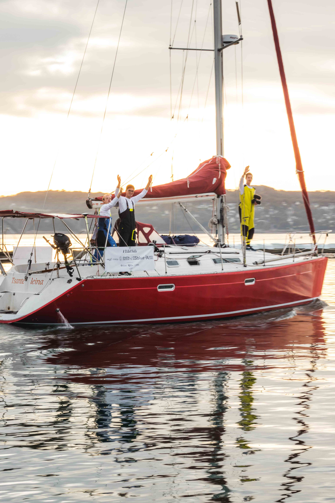
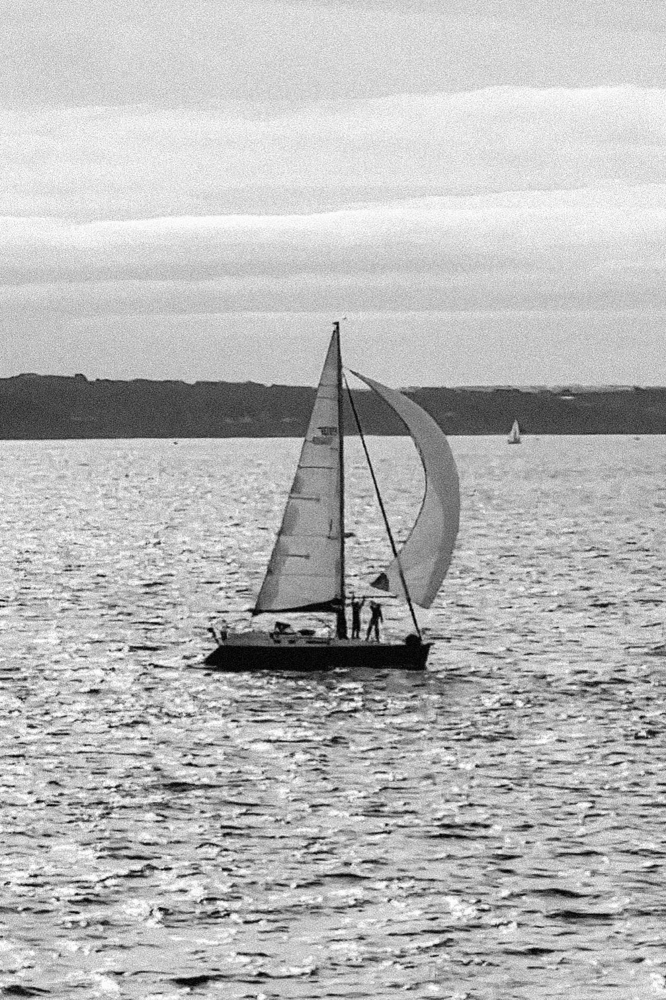
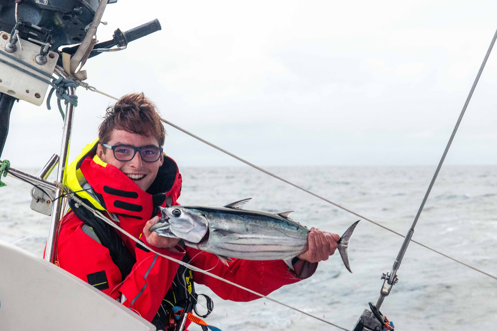
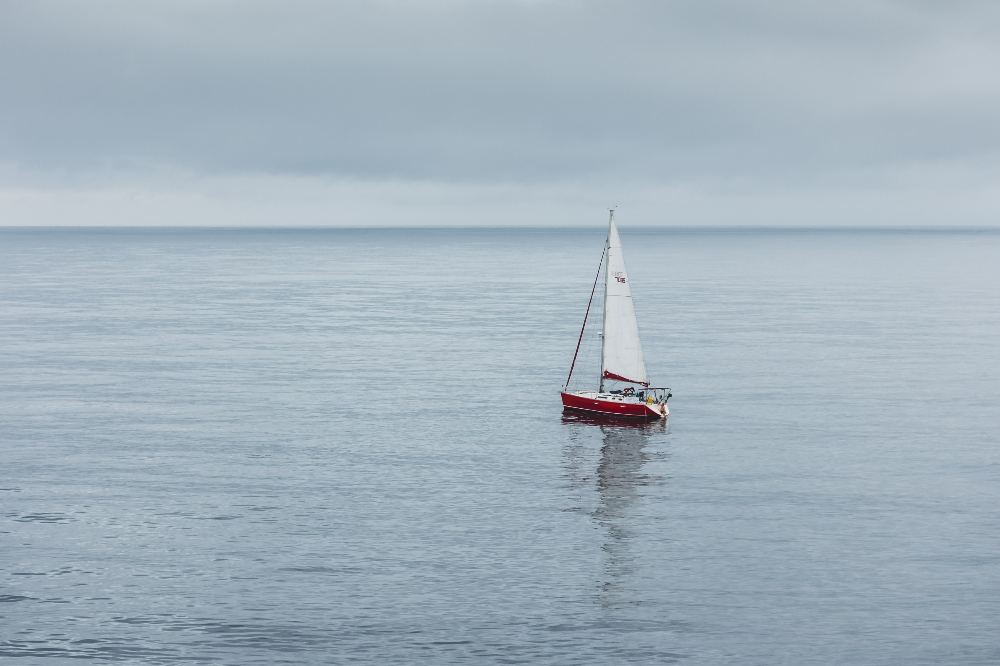
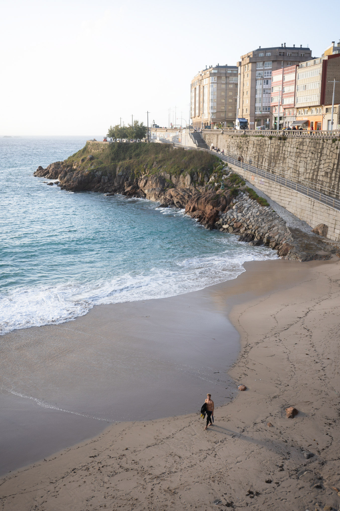
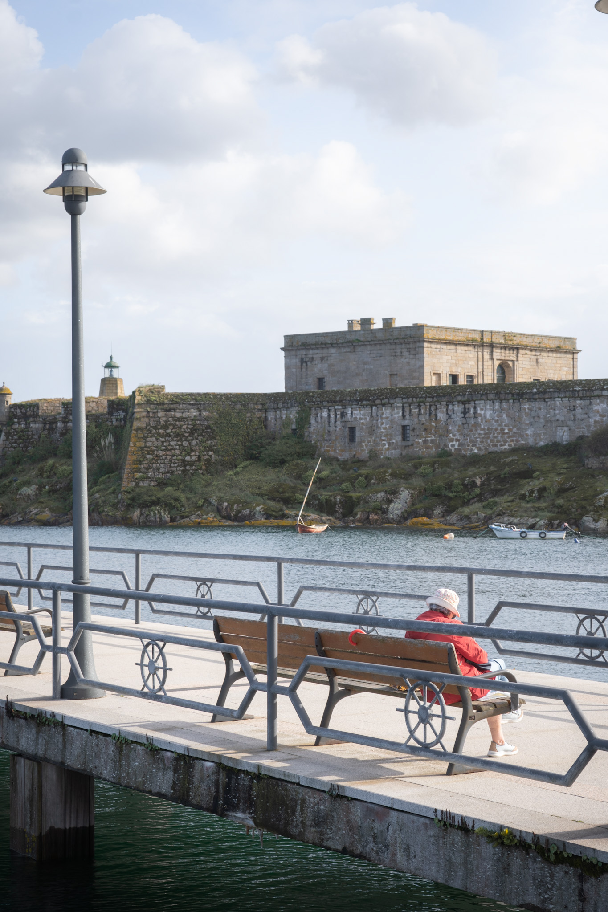
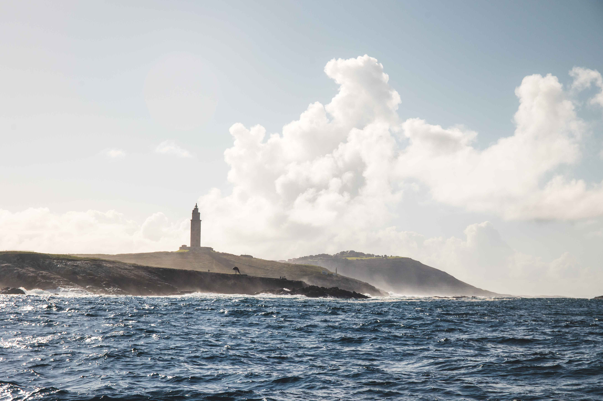
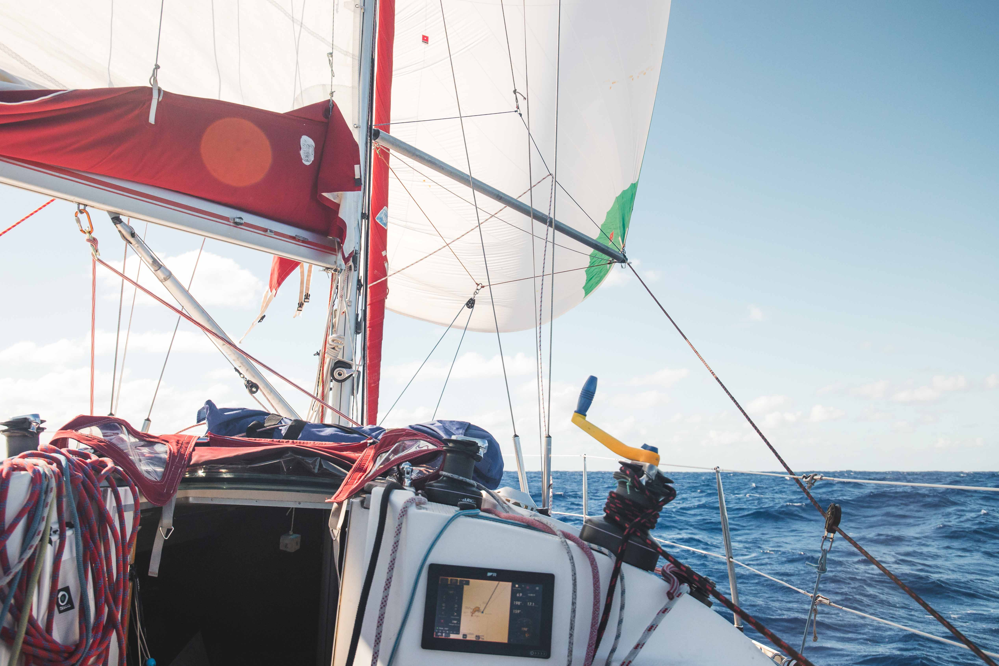
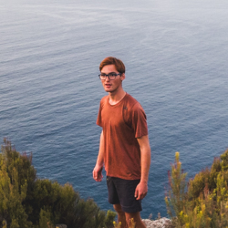

Nous avons choisi de partir de Brest le dimanche 13 octobre au petit matin. La météo est très douce, le soleil se lève tranquillement derrière le pont de l’Iroise et nos familles ainsi que quelques amis sont présents sur le ponton. Le temps de saluer tout le monde et de mettre le moteur en route, ça y est nous larguons les amarres et démarrons notre périple. Le vent n’est pas encore établi, nous glissons donc au moteur au milieu de la flotte de voiliers rejoignant la ligne de départ de la régate du week-end en rade de Brest. Une fois le goulet atteint, un léger souffle nous permet d’envoyer le spi jusqu’à passer devant le Petit Minou où nos familles attendent le passage du bateau rouge avant qu’il ne disparaisse au large.


Les premières heures se passent assez tranquillement jusqu’à la chaussée de Sein où le vent refusant et forcissant nous oblige à plusieurs manœuvres pour adapter la configuration de voiles. Nous passons donc au large du phare d’Ar Men sous solent1 et un ris2. La météo prévue pour la traversée du golfe de Gascogne nous donne globalement du vent entre 10 et 15 nœuds au près avec quelques transitions à passer. Nous trouvons assez rapidement notre rythme avec Clément pour faire marcher le bateau et organiser la vie du bord, en attendant que Félicien arrive à dompter son mal de mer.

Après deux jours de mer, notre première tentative de pêche est fructueuse avec la première bonite de l’année ! L’après-midi de pétole3 qui suit nous donne du temps, le bateau est à plat. C’est l’occasion de se reposer et même de se baigner pour Clément ! La dernière journée et l’approche des côtes espagnoles se fait à grande vitesse, le bateau est lancé au travers à 7/8 nœuds et nous voyons la côte devenir de plus en plus nette. Nous la longeons ensuite pendant quelques heures jusqu’à atteindre le port de La Corogne en Galice, à la pointe nord-ouest de l’Espagne.

A notre arrivée, nous trouvons une petite marina en centre-ville où sont stationnés de nombreux bateaux français, soit en attente d’une météo favorable pour passer le cap Finisterre, soit pour traverser le golfe de Gascogne et rentrer en France. Nous y retrouvons l’équipage des « Léz’arts marins », une autre équipe d’étudiants qui part faire le tour de l’Atlantique à la voile. Ils sont cinq à bord et nous faisons connaissance en partageant une grosse bonite que nous avons pêchée le jour de notre arrivée.


Nous restons quatre jours à La Corogne avant de nous lancer dans la traversée vers Madère. Initialement nous pensions descendre le long du Portugal et y faire des escales mais la météo ne s’y prêtait pas et une opportunité de traverser directement vers l’archipel de Madère s’est présentée. Nous décidons donc de saisir cette occasion pour quitter une bonne fois pour toute le vieux continent !

Les conditions s’annoncent musclées avec essentiellement du portant de la pointe espagnole jusqu’à Porto Santo, une petite île au nord de Madère. Nous quittons La Corogne dans l’après-midi du 21 octobre, dans la nuit nous passons au large du cap Finisterre et nous traversons le DST4 qui l’accompagne. Au cours de la nuit, le vent monte comme prévu, ainsi que la houle. Nous descendons donc les vagues de 3 mètres avec un vent qui oscille entre 25 et 30 nœuds. La vie à bord est très mouvementée et les surfs endiablés. Le bateau atteint des vitesses folles, régulièrement à plus de 13 nœuds, il atteindra une pointe à 19.9 nœuds dans un surf mémorable !

La journée de pétole qui suit est la bienvenue, elle nous permet de vérifier que tout va bien sur le bateau après 40 heures intenses. Nous en profitons aussi pour nous baigner et prendre une douche sous le soleil. Les trois jours restant pour atteindre notre destination se ressemblent, avec de nouveau un vent soutenu, entre 20 et 25 nœuds au portant mais avec un peu moins de houle cette fois-ci. La vie à bord reste très mouvementée et n’est pas la plus confortable. Nous arrivons tout de même à trouver notre rythme. Nous avons chacun notre quart de nuit. Le jour Clément nous régale en cuisine en réalisant des prouesses acrobatiques entre gite et contre-gite du bateau, pendant que nous nous relayons sur le pont avec Félicien entre vaisselle, pêche et surveillance des croisements avec les autres bateaux.
Nous gardons ce rythme jusqu’au dernier soir où la folie s’invite à bord du bateau. Nous avons hâte de découvrir nos premières îles du voyage et le cockpit du bateau se transforme en boîte de nuit entre jeux de lumières à la frontale et musiques dont les basses font vibrer le bateau…


Dans la nuit nous devinons les premiers reliefs de Porto Santo que nous devons contourner pour atteindre l'abri que nous visons. Nous arrivons finalement vers 2h du matin environ (environ, puisque d’un seul coup nous changeons de fuseau horaire et en même temps passons à l’heure d’hiver…). Après une rapide recherche de place infructueuse dans le port, nous mouillons face à la grande plage de Porto Santo. Le lendemain révèlera les paysages de notre première escale dans les îles de l'Atlantique.
1 : solent, voile d’avant plus petite que la voile d’avant principale (génois).
2 : ris, manœuvre qui permet de réduire la taille de la grand-voile.
3 : pétole, absence de vent.
4 : DST, dispositif de séparation de trafic. Communément appelé « rail de cargo » c’est une zone dans laquelle les navires de marine marchande doivent suivre une route précise afin de limiter les risques de collision dus à la densité du trafic maritime dans la zone.

